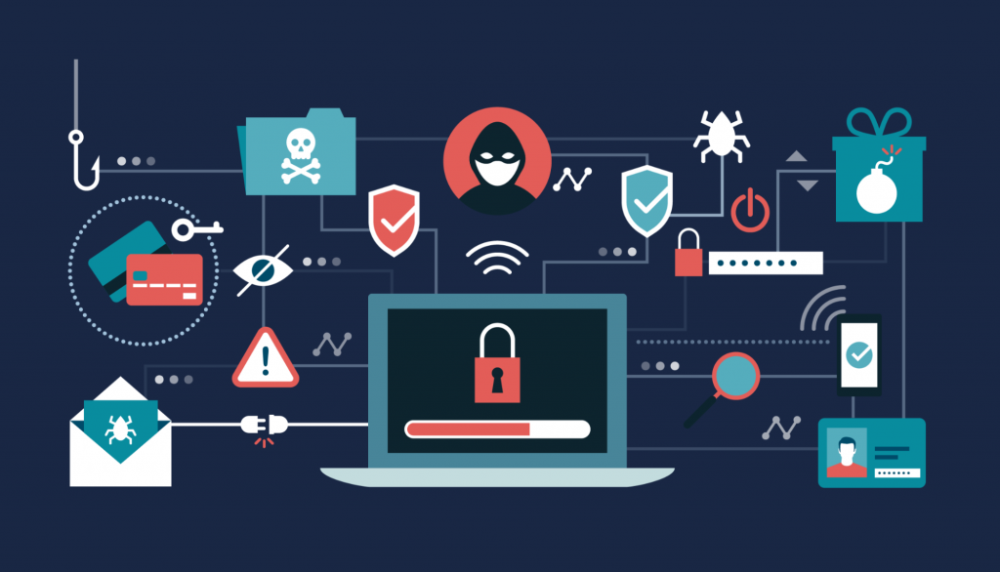

End-user protection
End-user protection or endpoint security is a crucial aspect of cyber security. After all, it's common for an user to unintentionally download malware or another type of cyber danger to their computer, laptop, or mobile device.
So, how do end users and systems benefit from cyber-security measures? To begin, cryptographic protocols are used to encrypt emails, files, and other sensitive data. This safeguards information not just while it is in transit, but also against loss or theft.
Furthermore, end-user security software analyzes computers for harmful malware, quarantines it, and then deletes it from the system. Security software can even detect and erase dangerous code hiding in the primary boot record, as well as encrypt or wipe data from the hard disk.
Real-time malware detection is also a focus of electronic security protocols. To fight against viruses or Trojans that change their shape with each run, many people utilize heuristic and behavioral analysis to monitor the behavior of a program and its code (polymorphic and metamorphic malware). To evaluate their activity and learn how to better detect new infections, security programs can isolate potentially harmful apps in a virtual bubble separate from the user's network.
As cyber-security specialists find new dangers and strategies to counteract them, security programs continue to evolve new defenses. Employees must be trained on how to utilize end-user security software in order to get the most out of it. Importantly, keeping it up to date and functioning guarantees that it can defend users from the latest cyber dangers.
Securing Against Malware
Malware protection is unquestionably one of the most pressing challenges today (and it will continue to be as malicious software evolves). To battle any suspicious behavior, you'll require anti-virus software. Typically, these packages include tools that do anything from warn you about questionable websites to identify potentially hazardous communications.
Mobile Security
Mobile phones are one of the most vulnerable gadgets to cyber-attacks, and the danger is only becoming worse. The loss of a device is the number one fear among cybersecurity specialists. It's risky to leave our phones at a restaurant or in the back of a car. If this happens, there are tools that can lock all mobile phone usage (or impose multi-factor passwords). Security of applications is increasingly becoming a key concern. Experts turn to cybersecurity solutions to combat mobile apps that require too many privileges, introduce Trojan malware, or leak personal information. These technologies will detect or completely prevent suspicious activities.
Web Browser Security & the Cloud
Browser security refers to the process of securing internet-connected, networked data against data breaches or malware. Pop-up blockers are included in anti-virus browser software and merely alert or block spammy, questionable websites and adverts. Two-factor authentication, security-focused browser plug-ins, and encrypted browsers are some of the more advanced strategies.
Wi-Fi Security
When you use public Wi-Fi, you open yourself up to a range of man-in-the-middle cyber assaults. Most cybersecurity experts recommend utilizing the most up-to-date software and avoiding password-protected sites that hold sensitive information to protect against these attacks (banking, social media, email, etc.). Using a virtual private network (VPN) is arguably the most secure approach to protect against a cyber assault on public Wi-Fi (VPN). Virtual private networks (VPNs) create a secure network in which all data sent over a wireless connection is encrypted.
